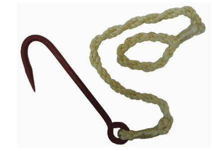
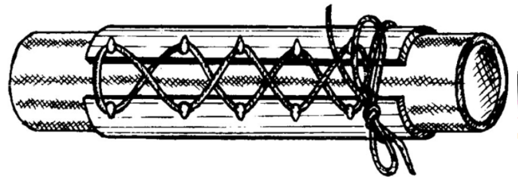

1.4 Особенности эксплуатации напорных рукавов
1.4.1 Применение в работе при тушении пожара
Напорные рукава укладывают в отсеки кузова МСП в соответствии с инструкцией по эксплуатации МСП. Во избежание интенсивного износа напорных рукавов необходимо строго выполнять требования по их размещению и креплению в отсеках МСП.
Напорные рукава, расположенные на катушках, закрывают специальным чехлом из плотной водонепроницаемой ткани.
ЗАПРЕЩАЕТСЯ устанавливать на мобильное средство пожаротушения неисправные, не прошедшие испытания, грязные напорные рукава.
При прокладке рукавных линий необходимо следить, чтобы напорные рукава не имели резких перегибов. Стараться не допускать их прокладку по острым или горящим (тлеющим) предметам, поверхностям, залитым горюче-смазочными материалами или химикатами. В лестничных клетках следует прокладывать рукавные линии между маршами, не загромождая при этом проходы и лестницы. Прокладка рукавных линий по улице, дороге, двору должна производиться по возможности на непроезжей части, а в местах движения автотранспорта напорные рукава должны быть защищены рукавными мостиками.
При прокладке рукавных линий через заборы, окна и другие препятствия, где возможны резкие перегибы напорных рукавов, следует использовать рукавное колено (седло) (рис. 6).
Рис. 6. Использование рукавного колена
Для закрепления рукавной линии, прокладываемой в вертикальном направлении по стене, внутри здания или по пожарной лестнице, необходимо применять рукавные задержки из расчета не менее одной задержки на напорный рукав (рис. 7).

Рис. 7. Рукавные задержки
ЗАПРЕЩАЕТСЯ СБРАСЫВАТЬ НА РУКАВНЫЕ ЛИНИИ ЧАСТИ РАЗБИРАЕМЫХ КОНСТРУКЦИЙ, А ТАКЖЕ СБРАСЫВАТЬ НАПОРНЫЕ РУКАВА С КРЫШ И ВЕРХНИХ ЭТАЖЕЙ ЗДАНИЙ. РУКАВА ДОЛЖНЫ ПЕРЕНОСИТЬ ПОЖАРНЫЕ, А СПУСКАТЬ С ВЫСОТЫ ИХ СЛЕДУЕТ ПРИ ПОМОЩИ ВЕРЕВОК ИЛИ ДРУГИХ ПРИСПОСОБЛЕНИЙ.
Во избежание гидравлических ударов и разрывов напорных рукавов подачу воды в рукавную линию осуществляют путем постепенного открытия клапанов напорных патрубков насоса и разветвлений.
ЗАПРЕЩАЕТСЯ РЕЗКО ПОВЫШАТЬ ДАВЛЕНИЕ В НАСОСЕ, А ТАКЖЕ РЕЗКО ПЕРЕКРЫВАТЬ ПОЖАРНЫЙ СТВОЛ.
При возникновении течи в напорном рукаве она должна быть немедленно устранена путем установки рукавных зажимов. В зависимости от размера повреждения напорного рукава могут использоваться следующие рукавные зажимы:
а) ленточный зажим (рис. 8) для ликвидации течи из отверстий диаметром до 2 см или разрывов длиной до 3 см;
Рис. 8. Ленточный зажим
б) корсетный зажим (рис 9) для ликвидации течи из продольных разрывов длиной до 10 см.

Рис. 9. Корсетный зажим
В качестве зажима может быть использован также отрезок напорного рукава того же диаметра длиной не менее 300 мм, который до навязки пожарных соединительных головок одевается на напорный рукав. При появлении течи во время работы на пожаре, давление в напорном рукаве сбрасывается, и отрезок (зажим) перемещается на место повреждения.
Рукавные колена, задержки, зажимы, мостики и другие приспособления относятся к пожарно-технической продукции и должны изготавливаться по технической документации, утвержденной в установленном порядке.
При использовании напорных рукавов на пожарах, при ликвидации аварий, ЧС, проведении практических занятий в книге службы указывают их диаметр и номера, в случае выхода их из строя или получения повреждения, дополнительно указывается характер повреждения.
Дата и характер повреждения заносится ответственным за эксплуатацию рукавов в формуляр напорного рукава.
После окончания тушения пожара при сборке напорных рукавов, зажимы снимают, а место течи отмечают.
При эксплуатации напорных рукавов в зимнее время необходимо:
при работе забирать воду для подачи в напорные рукава из открытых водоисточников на больших глубинах, где ее температура несколько выше, чем у поверхности;
подачу воды производить по одной магистральной линии, при этом насос должен работать на повышенных оборотах с не полностью открытым напорным патрубком, что позволяет несколько повысить температуру воды в напорных рукавах от трения ее о рабочее колесо и стенки корпуса насоса;
во избежание замерзания воды в напорном рукаве необходимо убедиться в устойчивой работе центробежного насоса, сливая воду через второй напорный патрубок, к которому не присоединена напорная линия. Через 15 - 20 с нужно увеличить число оборотов вала насоса и плавно подавать воду в магистральную линию, одновременно закрывая запорную арматуру (клапан, задвижка) второго патрубка;
во избежание замерзания воды в рукавных линиях при температуре минус 10 °C и ниже, к разветвлению присоединяется максимум рабочих линий, увеличивается скорость подачи воды, при этом не прекращается полностью подача воды из пожарных стволов, а когда по условиям работы бывает нужно на непродолжительное время перекрыть пожарные стволы, то часть воды сбрасывается через свободный патрубок разветвления;
после окончания тушения пожара необходимо воду немедленно слить из напорных рукавов. Вмерзшие в лед напорные рукава следует отогреть паром, горячим воздухом или применять компресс из кошмы, смачиваемой горячей водой. Замерзшие рукава или участки рукавов можно поднести к выхлопной трубе пожарного автомобиля, в целях отогрева отработавшими газами, как рукавов, так и соединений соединительных головок.
Перед складированием напорных рукавов места сгибов необходимо оттаять. В случае сплошного промерзания напорных рукавов сборку их проводить без сгибов и переломов, при этом перевозку их надо производить на грузовых автомобилях с прицепами или другим способом, не допуская механических повреждений, укладывая напорные рукава во всю длину.
При тушении пожаров в условиях низких температур необходимо использовать рекомендации заводов - изготовителей напорных рукавов.
По истечении срока службы, указанного в формуляре, напорные рукава должны быть замены новыми. В случае, если после окончания срока службы напорные рукава сохранили свои качества и не подверглись старению (определяется при внешнем осмотре), они допускаются к эксплуатации только после испытания на герметичность под давлением, указанным в таблице 3.